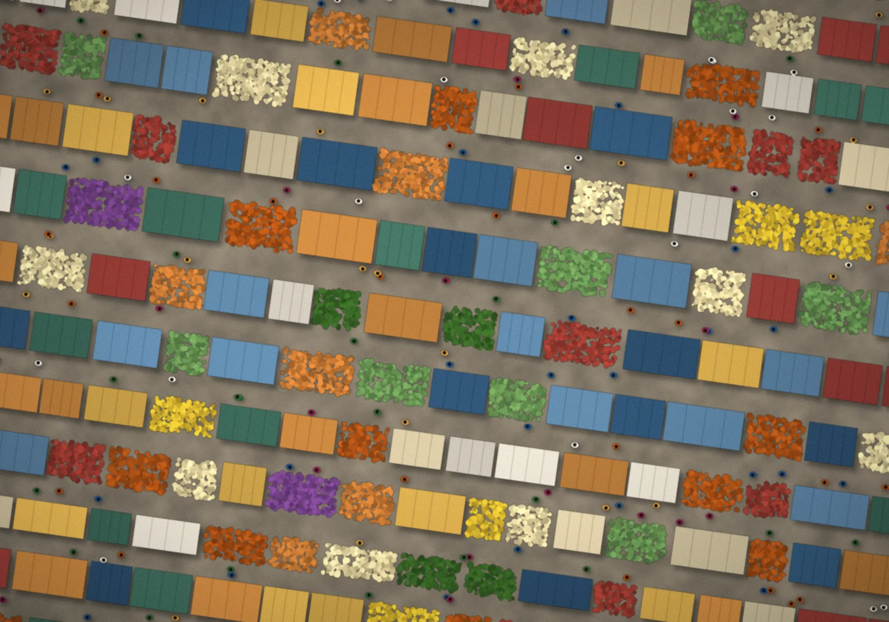
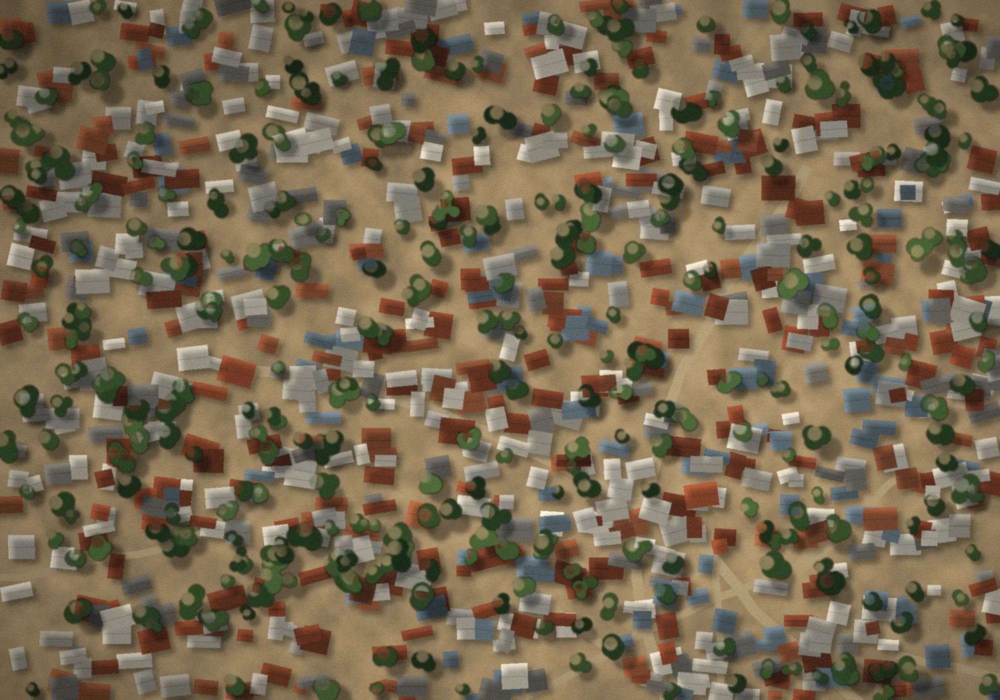
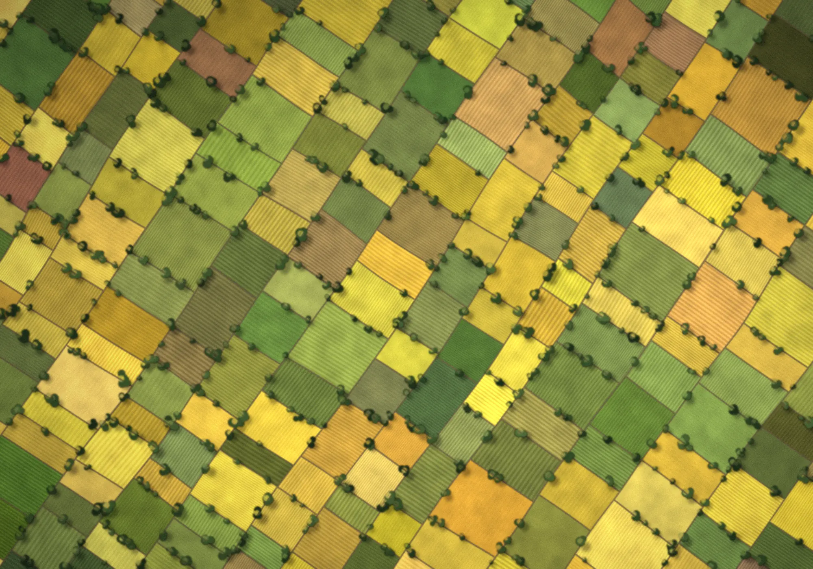
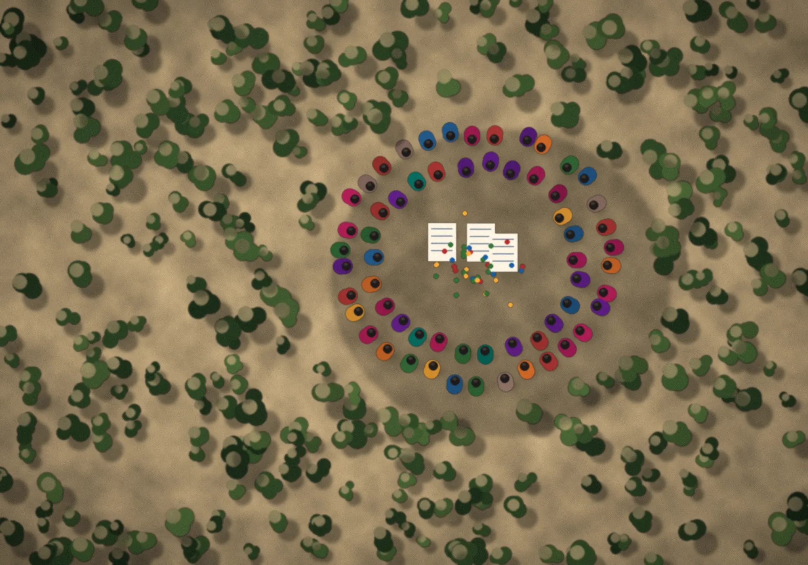
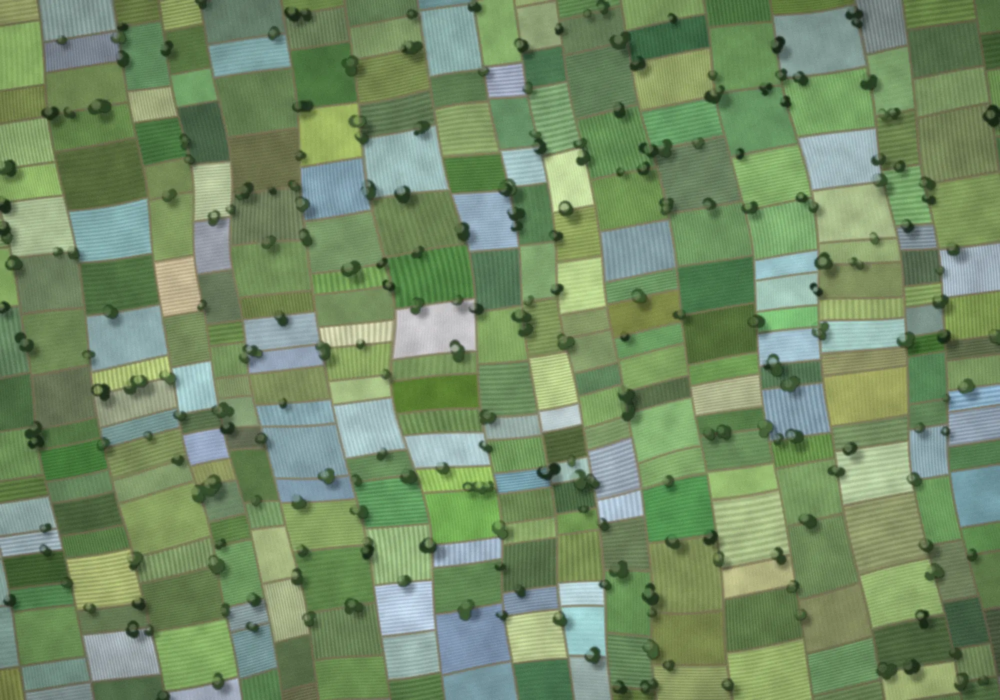

Situational Awareness
Baseline, needs and context assessments that build an accurate picture of communities and systems.
- Baseline and needs assessments
- Stakeholder and value-chain mapping
- Policy and ecosystem scans
Corporate Solutions
Turning Market Understanding Into Smarter Decisions.
We combine rigorous qualitative and quantitative research with deep rural-market knowledge. The result is a clear view of your consumers, channels and competitors, and a confident answer to what you should do next.

Two lenses, one answer: what the market is doing, and why.
What We Do
We don’t just describe what the market looks like. We explain why it behaves the way it does, and what you should do about it.
For three decades, MART Global’s research practice has helped companies make sense of markets that conventional research often misses: small-town retail, rural households, farmers, informal trade and emerging consumers.
Our teams design each study, run fieldwork in local languages and contexts, and turn the findings into decisions on product, pricing, distribution and communication.
Research Capabilities
Five core research capabilities, each designed to inform a decision rather than produce data for its own sake.
Identify who your customers really are, how they differ and which segments deserve your focus. We build segmentation frameworks that reflect rural and small-town realities, not urban assumptions.

Size the opportunity with confidence and set prices that the market will accept. Our models account for seasonality, income cycles, credit and channel economics.

Validate products, packaging, communication and service ideas before you commit to them. We test with real users in real contexts and capture both what they say and what they do.

Build a reliable, current picture of your market, competitors and channels. We combine field audits, secondary intelligence and mapping into decision-ready dashboards.

Understand how purchase decisions are actually made, from first awareness to repeat purchase. We observe behaviour in haats, kirana stores and homes, as well as asking about it.
Our Approach
A structured, five-stage process that keeps every study tied to the decision it needs to inform.
Frame the business question, the decision at stake and what success looks like.
“What do we really need to know?”Design the right mix of qualitative and quantitative methods, then run disciplined fieldwork.
“Who should we ask, where and how?”Combine data, field observation and context into a clear picture of the market.
“What is the evidence telling us?”Translate insight into options, priorities and a recommended direction.
“Where should we play, and how?”Support pilots, rollout and on-ground activation so the strategy holds up in the market.
“How do we make it happen?”Social Research
Our social research practice helps governments, foundations and development organisations design programs that reflect how communities actually live and work.
From baseline and needs assessments to evaluations and impact studies, we apply the same rigour we bring to markets to questions of livelihoods, inclusion and wellbeing.
A Connected Framework
Baseline, needs and context assessments that build an accurate picture of communities and systems.
Strengthening the institutions and people who sustain change after programs end.
Positioning community enterprises and products for real markets and real buyers.
Taking findings into the field by piloting, delivering and monitoring solutions.
Research Impact Areas
Sector depth built over thousands of studies, from farm inputs and FMCG to financial inclusion and community enterprise.
Connected Capabilities
Insights become more valuable when they can move into implementation, market linkage and sustainable impact.